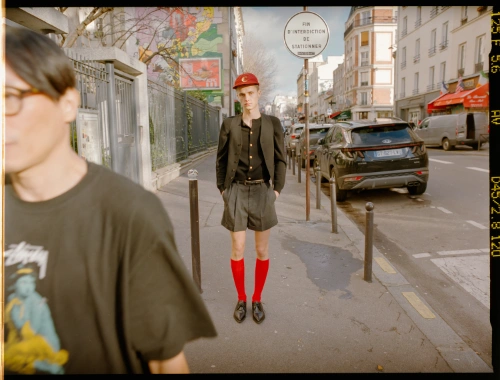

Paris-based makeup artist creating refined beauty with a modern, image-driven sensibility. Working across fashion, beauty and commercial projects, his approach combines precision, restraint and a strong understanding of how makeup functions within the broader visual narrative of an image.
常驻巴黎的化妆师，致力于以现代、以影像为导向的审美理念，打造精致而克制的美感。活跃于时尚、美妆及商业项目领域，他的创作方式融合精准、克制，以及对化妆如何融入影像整体视觉叙事的深刻理解。
SELECTED CLIENTS /
BYREDO / GIVENCHY BEAUTY / YSL BEAUTY / CLARINS / ADIDAS / DELVAUX / SWAROVSKI / ARTHUS BERTRAND / MORE OR LESS / BEAUTY PAPERS / MODERN WEEKLY STYLE / REPLICA MAN / 10 MAGAZINE / PORT MAGAZINE / OFFICE MAGAZINE / HUBE / VOGUE MEXICO / VOGUE ADRIA / VOGUE CZ / NUMÉRO BERLIN / NUMÉRO CHINA
